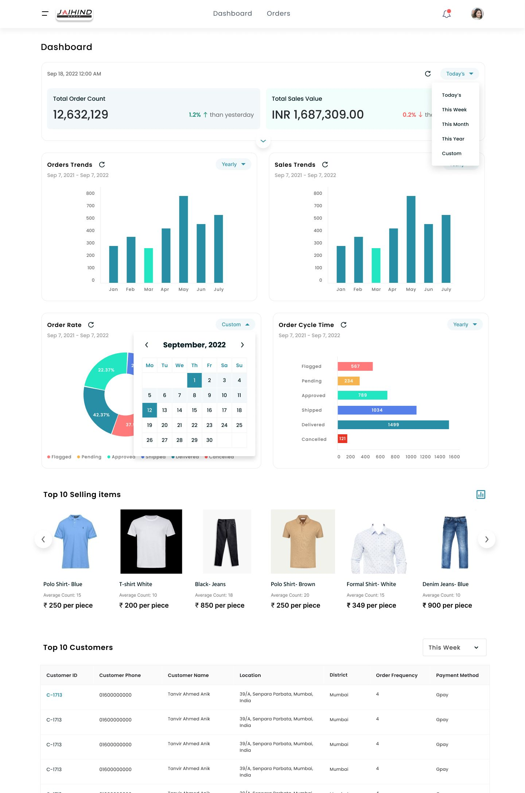
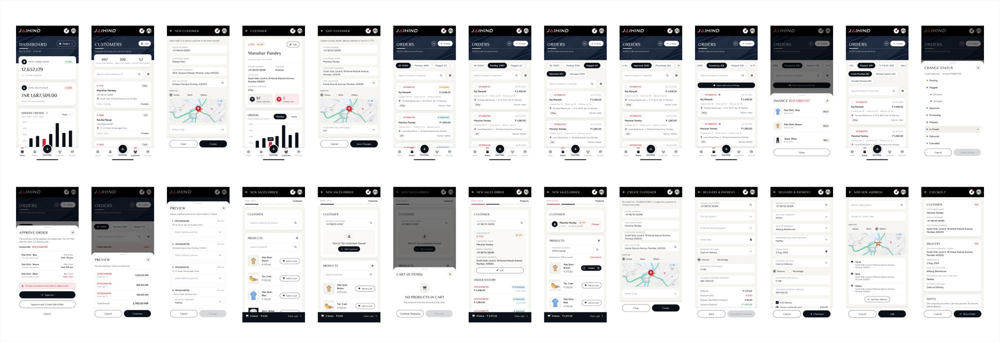
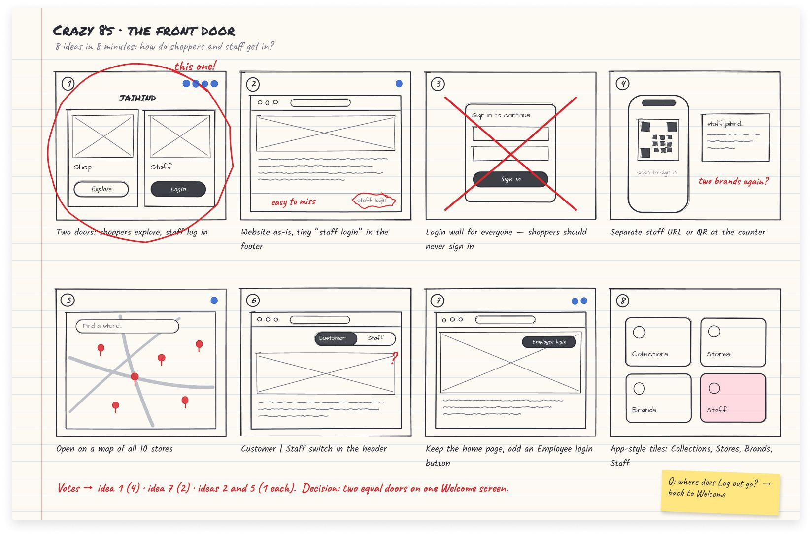
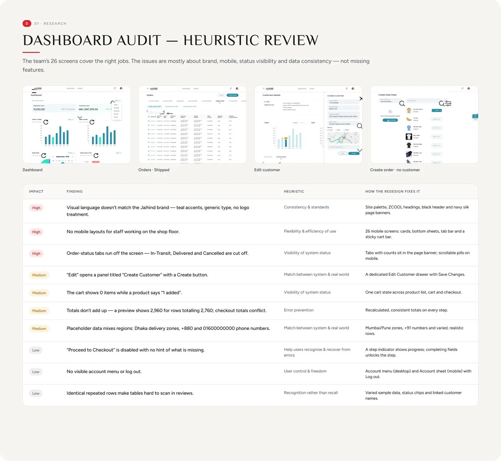

Solution 01
Enter an order once, and everyone sees where it is
An order moves through Pending, Approved, In transit and Delivered in one place, so nobody has to call around to find it.
5 systems became 1
JaiHind-India · 2023 to 2024 · B2B internal tool

Orders moved by phone calls and paper books, and each person tracked their own, so nobody could see the full picture.
Every order took the same route. A customer called the store, staff wrote it in a paper book, then called the supplier, one call at a time. Each person tracked their own orders, so nobody saw the full picture.
Staff were good at their jobs. The tools were the problem.

Goal 01
Enter each order once, so copies can't disagree.
Goal 02
Catch stock problems before an order moves, not after.
Goal 03
Finish an order while the customer is still waiting.
Solution 01
An order moves through Pending, Approved, In transit and Delivered in one place, so nobody has to call around to find it.
5 systems became 1
Solution 02
The portal checks stock first, so a problem is caught before the order moves instead of after.
27% fewer order errors
Solution 03
Four short steps replace one long form, so staff finish while the customer waits at the counter or on the line.
40% faster per order

Solution 04
If the caller isn't in the system, staff add them right inside the order, so nobody hits a "No customer found" dead end.
Part of the 4-step order
Before drawing a screen, our team of 3 designers met employees in all 10 stores. Together we talked to about 200 people across sales, managers, purchasing, tailoring, HR and the owner. I ran 80+ of those interviews myself.
Staff work on their feet, from phones, often with a customer waiting.
The same order was typed into more than one place, so copies didn't match.
Most had never used a work app before.
Key insight
The same order went into more than one place, so copies didn't match. Entering it once became the rule every screen followed.

Before · the old flow
Asks for a size, colour or item.
Staff note it by hand, in a paper file.
Copies don't matchOne call at a time.
Biggest stallEach person tracks their own orders.
Nobody sees it all2 to 3 orders a day
After · the redesigned flow
Order entered once, in 4 short steps.
Fast startRuns before approval.
Error caught earlyFrom the same order record.
No re-typingPending, Approved, In transit, Delivered.
Everyone sees it7 to 8 orders a day
Rejected
It was quicker to tap, but stock problems showed up after the order had already moved. Checking first prevents the wrong order instead of fixing it.
Rejected
Staff take orders standing at the counter or on a call. A long form can't be finished while someone waits.
The slow parts were the handoffs between teams, which no single team could see until we mapped them.
One record
5 systems became 1Fewer errors
27% fewer order errorsFast at the counter
40% faster per order| Measure | Before | After |
|---|---|---|
| Orders sent to suppliers a day | 2 to 3 | 7 to 8 |
| Time to record the day's orders | A full day | Half a day |
| Time per order | Baseline | 40% faster |
| Order errors | Baseline | 27% fewer |
| Systems to move one order | 5 | 1 |
After launch we audited the live portal against 10 usability heuristics and logged each finding with a fix.

The lesson: Design for the least sure user: big buttons and plain words helped people who had never used a work app.
Ideas, not built.
Future 01
An agent drafts supplier reorders from stock and sales, with the reason on every draft ("Sold 14 this week, 3 left"). Staff approve every one.
Figma example, all 26 flows (opens in a new tab)

Built every page from designers' handoff files and checked each against the design before release.

IRB-approved study with 24 participants. 6 of 8 testers fully trusted the AI's advice.